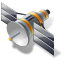
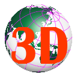

Powered by SVGMap technology xxx Km
注記：このページは、SVGMap技術のプレビューのためにのみ提供されています。本ページ作成者は、表示された各レイヤの情報を利用した結果生じたいかなる損害についても、一切の責任を負いません。
Notice: This page is provided solely for technical preview of SVGMap technology. The originator of this page assumes no responsibility for any damages resulting from the use of the information on each layer displayed.
xxx Km
注記：このページは、SVGMap技術のプレビューのためにのみ提供されています。本ページ作成者は、表示された各レイヤの情報を利用した結果生じたいかなる損害についても、一切の責任を負いません。
Notice: This page is provided solely for technical preview of SVGMap technology. The originator of this page assumes no responsibility for any damages resulting from the use of the information on each layer displayed.